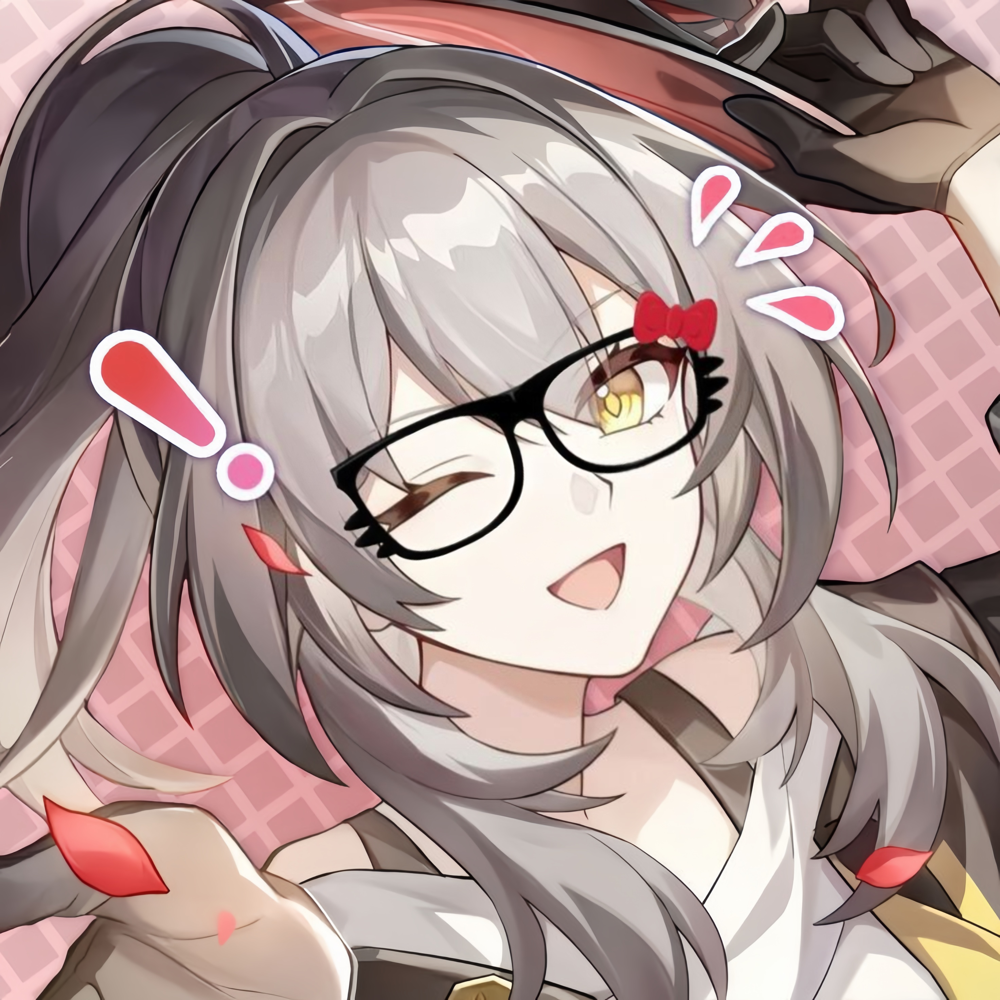

Software Developer
Merancang dan mengembangkan solusi digital yang fungsional, responsif, dan mudah digunakan.

HELLO, I'M
Software Developer / Cyber Community
Membangun pengalaman digital dengan kode yang presisi, desain modern, dan semangat belajar tanpa batas.
Merancang dan mengembangkan solusi digital yang fungsional, responsif, dan mudah digunakan.
Mendukung edukasi keamanan digital dan budaya teknologi yang bertanggung jawab.
Pilih platform untuk terhubung dan mengikuti karya terbaru saya.